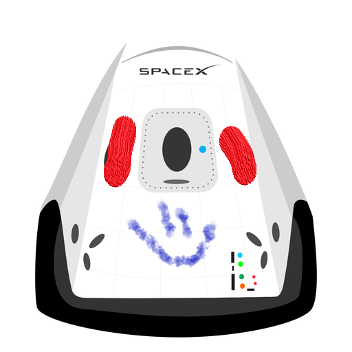

Hyperblog tu blog de confianza ,
Este es el titulo atractivo e interesante del post
Y este es el párrafo de inicio donde vamos a explicar las cosas increíbles que se pueden hacer con ramas

Los blogs son la mejor forma de compartir información y tus ideas. Muchos mas que ir a conferencias o salir en Youtube. Excepto si eres un rockstar. Pero estadisticamente no lo eres.... por ahora.

Suscribete y dale like